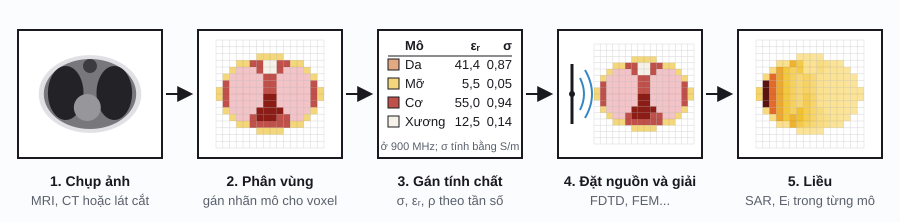

Bioelectromagnetics / Phần 7
Mô hình voxel toàn thân
Ở phần 5, ta thấy rằng không đo được trực tiếp điện trường hay SAR bên trong người, nên phải tính bằng mô phỏng. Nhưng mô phỏng cần một "cơ thể số" để tính trên đó. Phần này giới thiệu ngắn gọn mô hình voxel toàn thân: chúng là gì, được dựng ra sao, dùng vào việc gì và cần lưu ý gì khi dùng.
Mô hình voxel là gì?
Voxel (volume pixel) là "điểm ảnh ba chiều": một khối hộp nhỏ, thường có cạnh từ 0,5 đến vài mm. Một mô hình voxel (voxel model, voxel phantom) chia cơ thể thành hàng triệu khối như vậy, và mỗi khối chỉ mang một con số: nhãn cho biết nó thuộc mô nào (da, mỡ, cơ, xương, não...). Khi mô phỏng ở tần số f, mỗi nhãn được thay bằng tính chất của mô đó: độ dẫn điện σ và hằng số điện môi εᵣ (phần 4), cùng khối lượng riêng ρ để tính SAR.
Cách biểu diễn này khớp tự nhiên với lưới FDTD (phần 5): mỗi voxel là một ô lưới. Với FEM (phần 6), mô hình thường được chuyển thành lưới tứ diện trước khi giải.
Mô hình được dựng như thế nào?
Quy trình gồm ba bước chính:
- Chụp ảnh: MRI (phân biệt mô mềm tốt, không có bức xạ ion hóa), CT (thấy rõ xương), hoặc ảnh chụp lát cắt của thi thể như trong dự án Visible Human.
- Phân vùng (segmentation): gán cho mỗi voxel một nhãn mô. Đây là bước tốn công nhất; trước đây làm thủ công hoặc bán tự động từng lát cắt, nay có thêm hỗ trợ của học sâu.
- Gán tính chất: tra σ, εᵣ theo tần số (thường theo mô hình Gabriel hoặc cơ sở dữ liệu của IT'IS Foundation) và ρ cho từng nhãn.
Sau đó, mô hình được đặt cạnh nguồn (ăng-ten, cuộn dây, điện cực) và giải bằng FDTD, FEM hoặc phương pháp khác để ra liều trong từng mô.

Một số mô hình tiêu biểu
| Mô hình | Nơi phát triển, năm | Nguồn ảnh | Độ phân giải | Số mô | Thường dùng cho |
|---|---|---|---|---|---|
| TARO (nam), HANAKO (nữ), người Nhật trưởng thành | NICT, Nhật Bản, 2004 | MRI | 2 mm | 51 | SAR ở tần số vô tuyến |
| Mô hình tham chiếu ICRP 110 (nam, nữ) | ICRP, 2009 | CT (chỉnh từ hai mô hình Golem và Laura) | 2,137 × 2,137 × 8 mm (nam); 1,775 × 1,775 × 4,84 mm (nữ) | khoảng 140 | Liều bức xạ ion hóa |
| Virtual Family: Duke (nam, 34 tuổi), Ella (nữ, 26), Billie (bé gái, 11), Thelonious (bé trai, 6) | IT'IS Foundation, cùng FDA Hoa Kỳ, 2010 | MRI | Mô hình bề mặt, chia voxel theo nhu cầu | hơn 80 (bản đầu); khoảng 300 (bản 3.0) | SAR, an toàn MRI, thiết bị y tế |
| MIDA (đầu và cổ) | IT'IS Foundation, FDA và cộng sự, 2015 | Nhiều loại ảnh MRI | 0,5 mm | 153 cấu trúc | Kích thích não, cấy ghép vùng đầu |
| AustinMan, AustinWoman | Đại học Texas tại Austin | Ảnh lát cắt Visible Human | Có sẵn nhiều mức, từ 1 mm đến 16 mm | — | Mô phỏng điện từ |
Dùng để làm gì?
Cùng một mô hình có thể dùng cho nhiều bài toán; chỉ có nguồn và phương pháp giải thay đổi.
SAR từ điện thoại, trạm phát và thiết bị không dây
Đặt mô hình cạnh ăng-ten, chạy FDTD để tìm SAR toàn thân và SAR cục bộ (trung bình trên 10 g mô), rồi so với giới hạn ICNIRP. Khi kiểm định một chiếc điện thoại cụ thể, người ta thường đo trong một khuôn đầu nhựa chứa chất lỏng đồng nhất (khuôn SAM); mô hình voxel nhiều mô giúp hiểu SAR thực sự phân bố thế nào giữa các mô, và kiểm tra rằng phép đo đơn giản kia cho kết quả đủ bảo thủ.
Điện trường cảm ứng ở tần số thấp
Với đường dây điện, thiết bị gia dụng hay cuộn gradient của máy MRI, mô phỏng tính điện trường cảm ứng Ei trong từng mô, đặc biệt trong não và tủy sống. Các mức tham chiếu của ICNIRP (đo được bên ngoài cơ thể) được suy ra phần lớn từ những tính toán như vậy.
An toàn MRI và thiết bị cấy ghép
Cuộn phát sóng RF của máy MRI làm nóng mô, và quanh dây dẫn kim loại cấy ghép (máy tạo nhịp, điện cực) nhiệt độ có thể tăng cục bộ. Nhà sản xuất và cơ quan quản lý dùng mô hình người số để ước tính rủi ro trước khi thử trên người; Virtual Family được phát triển cùng Trung tâm Thiết bị và Sức khỏe Phóng xạ (CDRH) của FDA Hoa Kỳ cho mục đích này.
Kích thích não
Với TMS và tDCS, mô hình đầu chi tiết (như MIDA, hoặc mô hình dựng riêng từ ảnh MRI của từng người như trong SimNIBS) cho biết dòng điện thực sự đi tới vùng não nào và mạnh bao nhiêu. Xem demo tDCS ở phần 5 và các ứng dụng ở phần 6.
Lưu ý khi dùng
Độ phân giải và hiệu ứng bậc thang
Voxel càng lớn, mặt cong càng biến thành bậc thang, và các lớp mỏng (da dày khoảng 1–2 mm, dịch não tủy, màng) càng dễ biến mất hoặc bị phóng to. Voxel càng nhỏ thì số ô tăng theo lũy thừa ba: giảm cạnh voxel một nửa thì số voxel tăng 8 lần, và thời gian chạy FDTD tăng khoảng 16 lần, vì bước thời gian cũng phải giảm một nửa theo điều kiện Courant. Ở tần số cao còn một ràng buộc nữa: cạnh voxel phải nhỏ hơn khoảng 1/10 bước sóng trong mô.
- Kéo thanh "Kích thước voxel" từ 1 mm lên 16 mm và xem vùng đầu: lớp da và lớp dịch não tủy đứt đoạn, chỗ thì não chạm thẳng vào xương sọ. Hai con số "Da phủ bề mặt cơ thể" và "Não được dịch não tủy bao bọc" đo đúng điều này: ở 1 mm cả hai là 100 %, ở 16 mm chỉ còn vài chục phần trăm hoặc ít hơn.
- Bấm hoặc kéo trên hình toàn thân để chọn vùng phóng to; di chuột trên hình để xem nhãn, σ và εᵣ của từng voxel.
- Bấm "Tô theo σ" rồi đổi tần số: cùng một bản đồ nhãn cho ra bản đồ σ rất khác nhau ở 50 Hz và ở 1 GHz.
Độ phân giải của mô hình voxel
Cơ thể sơ đồ, lát cắt đứng dọc nhìn từ phía trướcĐây là cơ thể sơ đồ ghép từ vài hình đơn giản, không phải giải phẫu thật, nhưng hiện tượng là thật. Lớp dịch não tủy dẫn điện rất tốt nên "rẽ" một phần dòng điện đi vòng quanh não; nếu lưới quá thô làm lớp này đứt, kết quả tDCS hay TMS sẽ sai. Vì vậy mô hình toàn thân thường dùng voxel 1–2 mm, còn mô hình riêng cho đầu mịn tới 0,5 mm.
Một cơ thể không đại diện cho mọi người
Mỗi mô hình là một người cụ thể, hoặc được chỉnh theo một người "tham chiếu". Chiều cao, cân nặng, bề dày lớp mỡ và tư thế đều làm SAR thay đổi đáng kể, và trẻ em khác người lớn. Hầu hết mô hình được dựng từ ảnh chụp lúc nằm, nên muốn mô phỏng người đứng hay ngồi phải biến dạng mô hình. Vì vậy các nghiên cứu cẩn thận thường dùng nhiều mô hình (nam và nữ, người lớn và trẻ em) và báo cáo một khoảng giá trị, không chỉ một con số.
Kết quả phụ thuộc vào dữ liệu tính chất mô
Cùng một mô hình, đổi bảng σ và εᵣ (nhất là cho da và mỡ) hoặc đổi thuật toán lấy trung bình SAR có thể làm kết quả lệch đáng kể. Một nghiên cứu so sánh các mô hình châu Âu (NORMAN, NAOMI) với các mô hình Nhật Bản (TARO, HANAKO) đã chỉ ra đúng điều này. Khi đọc một kết quả mô phỏng, nên hỏi ba câu: mô hình nào, độ phân giải bao nhiêu, và tính chất mô lấy từ đâu.
Tài liệu tham khảo
- T. Nagaoka, S. Watanabe, K. Sakurai, E. Kunieda, S. Watanabe, M. Taki, Y. Yamanaka, "Development of realistic high-resolution whole-body voxel models of Japanese adult males and females of average height and weight, and application of models to radio-frequency electromagnetic-field dosimetry", Phys. Med. Biol. 49 (2004) 1–15. NICT, cách đăng ký sử dụng mô hình.
- ICRP, Adult Reference Computational Phantoms, ICRP Publication 110, Ann. ICRP 39(2) (2009). icrpaedia.org.
- A. Christ, W. Kainz, E. G. Hahn và cộng sự, "The Virtual Family: development of surface-based anatomical models of two adults and two children for dosimetric simulations", Phys. Med. Biol. 55 (2010) N23–N38.
- M.-C. Gosselin, E. Neufeld, H. Moser và cộng sự, "Development of a new generation of high-resolution anatomical models for medical device evaluation: the Virtual Population 3.0", Phys. Med. Biol. 59 (2014) 5287–5303. IT'IS Foundation, câu hỏi thường gặp về Virtual Population (cách nhận mô hình, giấy phép).
- M. I. Iacono, E. Neufeld, E. Akinnagbe và cộng sự, "MIDA: A Multimodal Imaging-Based Detailed Anatomical Model of the Human Head and Neck", PLoS ONE 10(4) (2015) e0124126. Bản toàn văn.
- AustinMan và AustinWoman Electromagnetic Voxels, Đại học Texas tại Austin, điều kiện sử dụng.
- P. J. Dimbylow, A. Hirata, T. Nagaoka, "Intercomparison of whole-body averaged SAR in European and Japanese voxel phantoms", Phys. Med. Biol. 53 (2008).
- S. Gabriel, R. W. Lau, C. Gabriel, "The dielectric properties of biological tissues: III. Parametric models for the dielectric spectrum of tissues", Phys. Med. Biol. 41 (1996) 2271–2293; tham số dùng trong demo, xem phần 4.